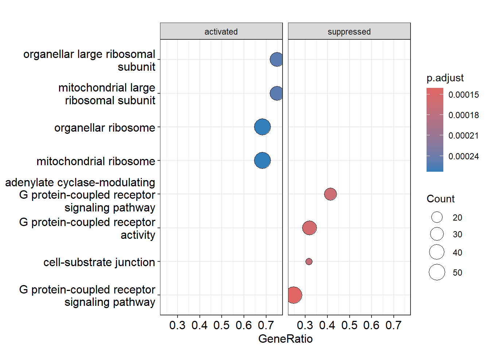
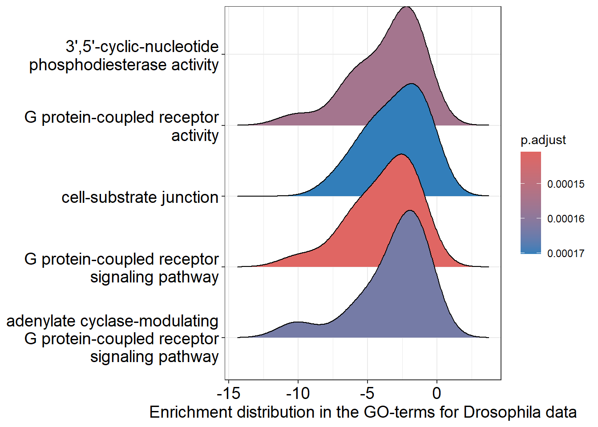
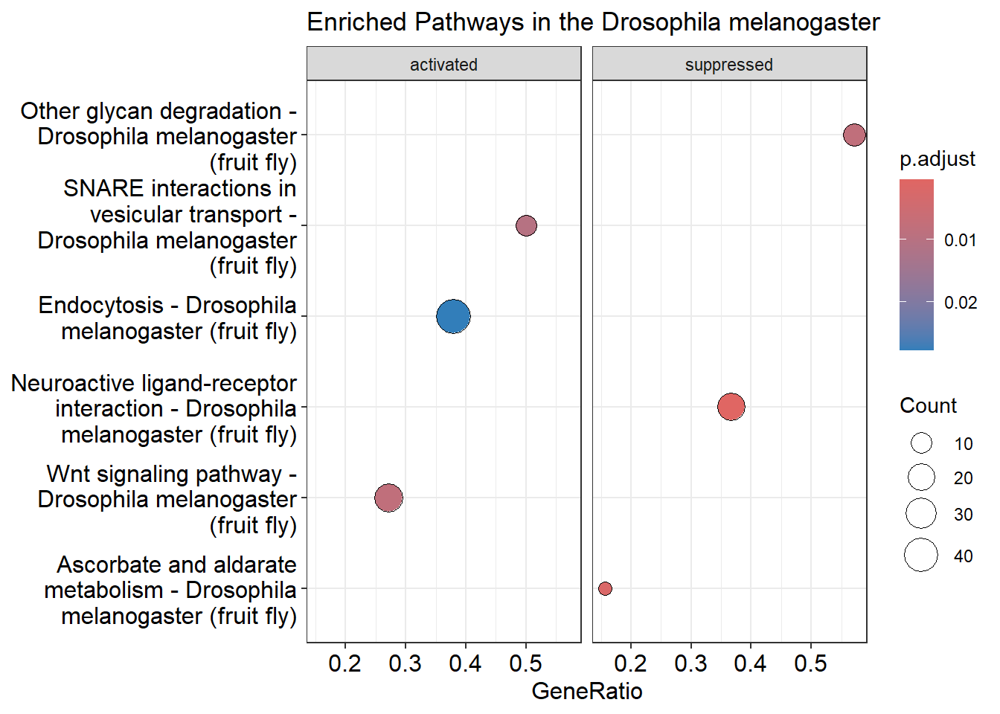
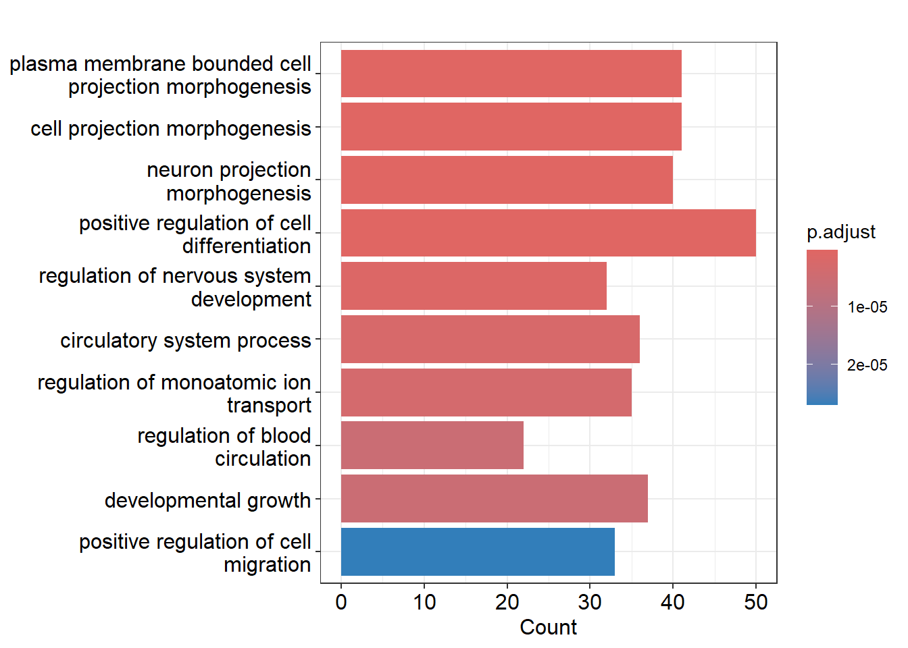
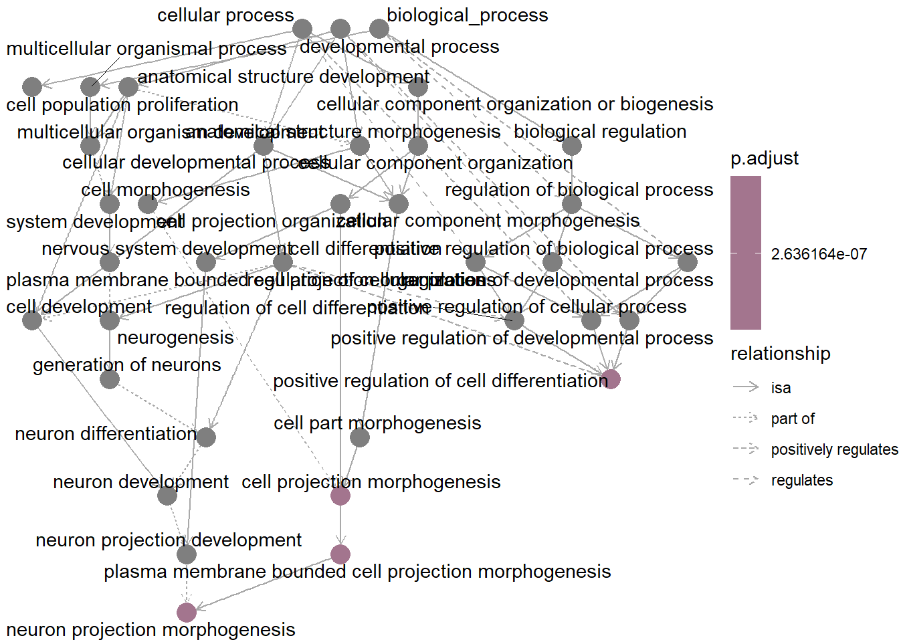
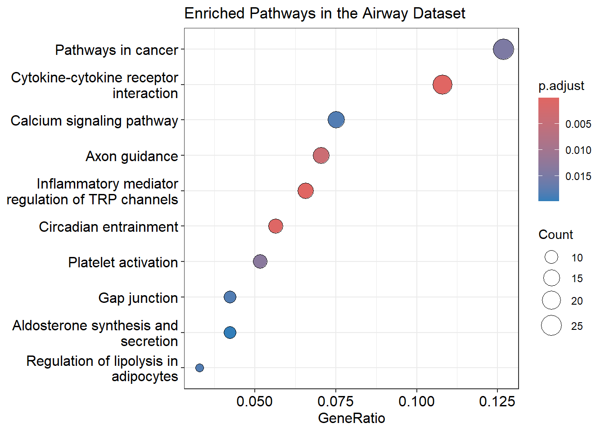
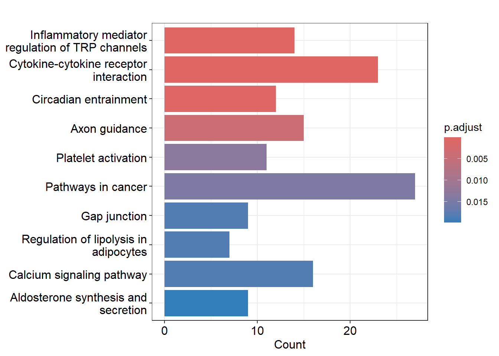

2 Pathway Analysis using the ClusterProfiler package in R
For my independent project, I am dedicating my time, a total of 4 days, to learning a new skill: conducting pathway analysis. Understanding the molecular mechanisms underlying diseases is paramount for developing effective treatments.The plan is to experiment with KEGG pathway analysis to become proficient in utilizing Clusterprofiler, the R-package through which pathway analysis will be conducted.
2.1 Datasets
I will apply KEGG pathway analysis to Drosophila melanogaster data (annotation data) and the airway data from Himes et al. (2014). In the study, researchers examined changes in gene expression in four different types of human airway muscle cells that were exposed to dexamethasone, a medication used for asthma. The study used RNAseq data from 8 samples of these cells. For each cell type, there were samples that were treated with the medication and untreated controls. They used a method called DESeq2 to identify which genes were expressed differently between the treated and untreated cells.
2.2 My workflow
| Day | Activities |
|---|---|
| Day 1 |
|
| Day 2 |
|
| Day 3 |
|
| Day 4 |
|
2.3 Project aim
The aim is to acquire a new skill: conducting pathway analysis.
For this, I need to master the Clusterprofiler package.
Learning clusterProfiler automates gene expression analysis with KEGG pathway enrichment, gene set enrichment, and over-representation analysis.
Mastering it helps interpret complex datasets, crucial for understanding diseases like cancer.
2.4 Clusterprofiler package
The clusterProfiler package helps to analyse and visualize gene expression data to identify and compare important biological pathways and functions.
It works with data from thousands of species and helps identify which biological pathways and functions are important in your data using databases like KEGG and Gene Ontology (GO).
With clusterProfiler, you can:
- Find Important Pathways: Identify which biological pathways are over-represented in your data.
- Compare Conditions: Easily compare data from different treatments or time points to see what changes.
- Visualize Results: Use simple tools to explore and visualize pathways and functions.
I will focus on identifying pathways and visualizing them. One way to do that is by pathview(), see figure 2.1.

Figure 2.1: Visualize the selected KEGG pathway using pathview(). Gene expression values can be assigned to a gradient color scale.
2.5 Getting into Clusterprofiler…
As preparation on how to use the Clusterprofiler package to make a pathway analysis and to get an idea on the options this package has and I can use, I have the next overview:

Figure 2.2: An overview of the clusterprofiler package and the associated analysis and visualization. Clusterprofiler supports Gene set enrichment analysis and over representation analysis.
2.5.1 Supported analysis
As can been seen in figure 2.2, Clusterprofiler supports the following analysis:
- Over-Representation Analysis: Over-representation analysis (ORA) identifies biological pathways or functions that are disproportionately represented among differentially expressed genes. It determines if certain pathways have more genes than expected by chance. Alongside ORA and GSEA, KEGG pathway enrichment analysis can also be performed to identify and visualize enriched pathways.
- Gene Set Enrichment Analysis: Gene Set Enrichment Analysis (GSEA) checks if specific groups of genes show significant differences in expression between two conditions, helping identify important biological changes.
I am planning on doing an over-representation analysis with clusterProfiler for the airway study and Gene Set Enrichment Analysis for drosphilia annotated data.
2.6 ORA and GSEA with clusterProfiler
In general, the steps are:
Load the differential expression results (DE results) in the Deseq2 object: We need the results from the differential expression analysis to generate gene lists for further functional analysis. The results of these analysis is stored in a Deseq2 object. For GSEA and ORA this step is the same.
Create gene list up and downregulated: Create different lists of genes based on their differential expression with associated log2 fold change values. To organize the genes into lists for specific analyses, such as up-regulated and down-regulated genes.
Function from clusterprofiler: bitr(). It can convert gene IDs.
- Perform GO enrichment analysis on up-regulated genes: Perform Gene Ontology (GO) enrichment analysis on the list of up-regulated genes. This is to understand which biological processes are influenced by the differentially expressed genes.
Function from clusterprofiler: enrichGO() for ORA and gseGO() for GSEA.
- Visualize GO enrichment results using a dotplot: Visualize the GO enrichment results using a dotplot and maybe another visualisation. To easily interpret and communicate the results of the GO enrichment analysis.
There are many visualisation options within Clusterprofiler that can be seen in figure 2.2. Some are specifically for GSEA or ORA, others can be used for both.
- Performing KEGG pathway Enrichment Analysis: Conduct KEGG pathway over-representation analysis to identify which KEGG pathways are significantly enriched in the list of differentially expressed genes.
Function from clusterprofiler: enrichKEGG().
- Visualize Enriched Pathways: Utilize interactive tools to explore enriched KEGG pathways to gain a deeper understanding of the pathway enrichment results in an interactive manner.
Function from clusterprofiler: browseKEGG(). An alternative to this is pathview(), by Luo and Brouwer (2013) from the pathview package, this does not belong to Clusterprofiler.
- Pathway gene enrichment analysis: Conducting a pathway gene set enrichment analysis.
Function from clusterprofiler: gseKEGG().
2.6.1 Installation Clusterprofiler
The installation of the Clusterprofiler package is described here.
if (!require("BiocManager", quietly = TRUE))
install.packages("BiocManager")
BiocManager::install("clusterProfiler")First, I load all the necessary libraries:
# Loading the required libraries
library(clusterProfiler)
library(dplyr)
library(airway)
library(org.Dm.eg.db)
library(pathview)
library(ggplot2)
library(enrichplot)
library(org.Hs.eg.db)
library(HanaahRTidy)2.7 GSEA with drosphilia annotation data
2.7.1 Gathering data
I’m analyzing Drosophila melanogaster data, so I install and load the annotation package “org.Dm.eg.db” here. There are also other available annotations.
# Setting the organism (I chose fruit fly for example )
organism = "org.Dm.eg.db"
#BiocManager::install(organism, character.only = TRUE)
library(organism, character.only = TRUE)Before diving into the analysis, we first need to prepare the input data. In this step, we’re reading in data obtained from differential expression analysis using DESeq2 named “drosphila_example_de.csv”, which includes important information such as log2 fold change values. This file contains the results of a differential gene expression analysis. I found this data specifically for the Drosophila melanogaster here.
2.7.2 Prepare Input for the GO term ontology enrichment analysis: Gene list
I want the log2 fold change values, because these values tell if genes differentiate in gene expression. I also save the gene identifiers in a vector with their log2 fold change value.
# Using my own function to import the drosphilia deseq2 dataset
drosphilia_data <- import_data("/Users/kzzba/Downloads/bookdown_khadija/drosphila_example_de.csv")
# I want the log2 fold change
input_gene_list <- drosphilia_data$log2FoldChange
# Assigning the gene names in X column of the drosophila_data dataset to the elements of the original_gene_list vector(log2 fold) to identify each gene.log2fold value and gene name now in original_gene_list.
names(input_gene_list) <- drosphilia_data$X
# Remove the missing values
gene_list <- na.omit(input_gene_list)
# The list in decreasing order (a must for clusterProfiler)
gene_list <- sort(gene_list, decreasing = TRUE)Now I have created a gene list (in the object name “gene_list”, that contains the gene identifiers with their log2 fold change value). I proceed with gene set enrichment analysis to discover biological insights from the dataset. Using the gseGO function, I identify enriched gene ontology (GO) terms associated with the differentially expressed genes.
2.7.3 GO term enrichment ontology analysis
Now onto the GO term enrichment ontology analysis, which identifies which biological functions, processes, or cellular components are overrepresented in the gene list, providing insights into their biological significance.
Input: the gene list, a sorted list of genes based on log2 foldchange values from the expression analysis.
Output: The top results are displayed using head(gene_set_enrichment), providing an overview of enriched GO terms.
Parameters
- ont = “ALL”: Specifies the Gene Ontology (GO) categories to include. “ALL” covers Biological Process (BP), Molecular Function (MF), and Cellular Component (CC).
- keyType: Defines the type of gene identifiers used. Here, ENSEMBL IDs are used.
- nPerm: Sets the number of permutations to 10,000 for robust results.
- minGSSize and maxGSSize: Specifies the minimum and maximum number of genes allowed in the gene sets.
- pvalueCutoff: Uses a cutoff value of 0.05 to determine which results are considered significant.
gene_set_enrichment <- gseGO(geneList=gene_list,
ont ="ALL",
keyType = "ENSEMBL",
nPerm = 10000,
minGSSize = 1,
maxGSSize = 1000,
pvalueCutoff = 0.05,
verbose = TRUE,
OrgDb = organism,
pAdjustMethod = "none")
# The results
head(gene_set_enrichment)## ONTOLOGY ID
## GO:0007186 BP GO:0007186
## GO:0004930 MF GO:0004930
## GO:0007188 BP GO:0007188
## GO:0007218 BP GO:0007218
## GO:0030055 CC GO:0030055
## GO:0005925 CC GO:0005925
## Description
## GO:0007186 G protein-coupled receptor signaling pathway
## GO:0004930 G protein-coupled receptor activity
## GO:0007188 adenylate cyclase-modulating G protein-coupled receptor signaling pathway
## GO:0007218 neuropeptide signaling pathway
## GO:0030055 cell-substrate junction
## GO:0005925 focal adhesion
## setSize enrichmentScore NES pvalue p.adjust qvalue
## GO:0007186 227 -0.5558057 -2.115394 0.0001420253 0.0001420253 0.142238
## GO:0004930 113 -0.5809564 -2.021148 0.0001548947 0.0001548947 0.142238
## GO:0007188 63 -0.6926563 -2.201787 0.0001630523 0.0001630523 0.142238
## GO:0007218 55 -0.6056430 -1.875694 0.0001650165 0.0001650165 0.142238
## GO:0030055 38 -0.7017319 -2.018735 0.0001709110 0.0001709110 0.142238
## GO:0005925 25 -0.7818698 -2.082128 0.0001746725 0.0001746725 0.142238
## rank leading_edge
## GO:0007186 885 tags=25%, list=6%, signal=24%
## GO:0004930 1016 tags=32%, list=7%, signal=30%
## GO:0007188 1344 tags=41%, list=9%, signal=38%
## GO:0007218 569 tags=35%, list=4%, signal=33%
## GO:0030055 1342 tags=32%, list=9%, signal=29%
## GO:0005925 1157 tags=36%, list=8%, signal=33%
## core_enrichment
## GO:0007186 FBgn0050361/FBgn0038880/FBgn0040506/FBgn0001104/FBgn0050340/FBgn0260446/FBgn0022710/FBgn0000253/FBgn0053639/FBgn0031275/FBgn0004842/FBgn0004573/FBgn0004622/FBgn0052547/FBgn0033932/FBgn0027794/FBgn0038140/FBgn0050106/FBgn0024944/FBgn0052683/FBgn0266137/FBgn0263131/FBgn0028956/FBgn0010223/FBgn0038653/FBgn0011582/FBgn0038542/FBgn0086704/FBgn0085380/FBgn0004784/FBgn0265959/FBgn0030437/FBgn0267252/FBgn0261953/FBgn0013767/FBgn0039396/FBgn0038980/FBgn0032048/FBgn0037976/FBgn0031302/FBgn0264002/FBgn0031770/FBgn0037408/FBgn0035092/FBgn0036260/FBgn0033744/FBgn0035385/FBgn0266429/FBgn0085413/FBgn0260753/FBgn0019985/FBgn0045038/FBgn0261549/FBgn0034636/FBgn0039419/FBgn0052843
## GO:0004930 FBgn0263116/FBgn0035331/FBgn0050361/FBgn0038880/FBgn0050340/FBgn0260446/FBgn0053639/FBgn0031275/FBgn0004842/FBgn0004573/FBgn0004622/FBgn0052547/FBgn0033932/FBgn0038140/FBgn0050106/FBgn0024944/FBgn0266137/FBgn0028956/FBgn0038653/FBgn0011582/FBgn0038542/FBgn0025680/FBgn0030437/FBgn0039396/FBgn0038980/FBgn0264002/FBgn0031770/FBgn0037408/FBgn0036260/FBgn0033744/FBgn0035385/FBgn0266429/FBgn0260753/FBgn0019985/FBgn0039419/FBgn0052843
## GO:0007188 FBgn0040507/FBgn0050054/FBgn0000037/FBgn0037546/FBgn0263116/FBgn0035331/FBgn0040506/FBgn0001104/FBgn0260446/FBgn0022710/FBgn0004573/FBgn0033932/FBgn0266137/FBgn0263131/FBgn0010223/FBgn0038653/FBgn0011582/FBgn0038542/FBgn0030437/FBgn0038980/FBgn0032048/FBgn0264002/FBgn0033744/FBgn0260753/FBgn0039419/FBgn0052843
## GO:0007218 FBgn0011581/FBgn0035331/FBgn0038880/FBgn0004842/FBgn0004622/FBgn0052547/FBgn0038140/FBgn0050106/FBgn0013767/FBgn0039396/FBgn0037976/FBgn0264002/FBgn0031770/FBgn0037408/FBgn0035092/FBgn0035385/FBgn0266429/FBgn0260753/FBgn0045038
## GO:0030055 FBgn0034540/FBgn0032683/FBgn0000464/FBgn0010395/FBgn0031850/FBgn0265991/FBgn0033987/FBgn0004397/FBgn0261574/FBgn0004456/FBgn0053993/FBgn0052406
## GO:0005925 FBgn0000464/FBgn0010395/FBgn0265991/FBgn0033987/FBgn0004397/FBgn0261574/FBgn0004456/FBgn0053993/FBgn0052406The results show the analysis identified 859 significantly enriched GO terms, from a ranked list of 15,156 genes, across Biological Process, Molecular Function, and Cellular Component categories.
Not all the genes have a GO-term, this can be because of incomplete annotation, this means that some genes might not be fully annotated in the GO database so their biological functions, processes, or cellular components are not yet known or recorded. It can also be because the GO database does not cover all possible gene functions and processes, especially for less studied organisms or less characterized genes.
An Explanation of the Key Columns
- ONTOLOGY: The GO category (Biological Process, Molecular Function, or Cellular Component).
- ID: Unique identifier for each GO term.
- Description: The meaning of the GO term and what it represents.
- setSize: Number of genes associated with each GO term.
- Enrichment Score (ES): Shows if the GO term is overrepresented at the extremes of the gene list. Negative values indicate downregulated genes, while positive values indicate upregulated genes.
- Normalized Enrichment Score (NES): Adjusted ES to account for gene set size and correlations. Higher absolute NES values mean stronger enrichment.
- pvalue, p.adjust, qvalue: Measures of significance. p-value is the raw score, p.adjust is adjusted for multiple tests, and qvalue shows the false discovery rate.
- rank: Position of the important genes within the list.
- leading_edge: Genes contributing most to the enrichment signal.
- core_enrichment: Key genes driving the enrichment within the leading edge.
Dotplot
We can visualise the enriched GO terms with the dotplot() function within Clusterprofiler. Facet grid is used to split the two plots into two seperate panels. This makes it easier to compare patterns.
I can see the activated and suppressed biological processes that the genes are involved in. You can also see what processes are more present in the gene set, for example a lot of genes are involved in G protein-coupled receptor signaling pathway, a total of 227 genes (see the gene_set_enrichment table).
Low p-adjust value: Indicates strong statistical significance, suggesting the GO term is likely to be genuinely enriched and relevant to the gene set. It implies that the observed enrichment is unlikely to be due to random chance.
High p-adjust value: Indicates weak or no statistical significance, suggesting the enrichment of the GO term may be due to random variation rather than a true biological effect.

Ridgeplot
We can also visualize the GO-terms with a visualisation specifically for GSEA only: the Ridgeplot. Basically it groups gene sets and displays density plots for each, showing the distribution of fold change values. This helps quickly see which pathways are upregulated or downregulated and provides an overview of gene involvement in various biological processes.
Here we also see that the GO term G protein-coupled receptor signaling pathway is upregulated. On the y-as the GO-terms are visible, on the x-as the padjust values.
# Performing ridgeplot
ridgeplot(gene_set_enrichment, showCategory = 5) +
labs(x = "Enrichment distribution in the GO-terms for Drosophila data")
2.7.4 KEGG Gene Set Enrichment Analysis: What pathways are enriched?
To find KEGG pathways related to our genes using gseKEGG(), we first need to change how our gene identifiers are labeled.
We do this with the bitr function in clusterProfiler.
After this, we use our original gene list to start the analysis.
2.7.5 Prepare Input
Pseudocoding:
- Convert ENSEMBL IDs to ENTREZ IDs.
- Remove duplicate ENSEMBL IDs.
- Select successfully mapped genes.
- Add ENTREZ IDs to the selected genes.
- Create a gene universe vector based on log2 fold change values.
- Label the vector with ENTREZ IDs.
- Remove NA values.
- Sort the vector in decreasing order.
# Convert gene IDs for gseKEGG function
gene_id_mapping <- bitr(names(input_gene_list), fromType = "ENSEMBL", toType = "ENTREZID", OrgDb = organism)
# Remove duplicate IDs based on the ENSEMBL column
unique_gene_ids <- gene_id_mapping %>% distinct(ENSEMBL, .keep_all = TRUE)
# Filter drosphilia_data to include only the genes that were successfully mapped. So filtered_gene_data contains only the rows from drosphilia_data where the "X" column matches the "ENSEMBL" column in unique_gene_ids
filtered_gene_data <- drosphilia_data %>% filter(X %in% unique_gene_ids$ENSEMBL)
# Add a new column to filtered_gene_data with the corresponding ENTREZ IDs
filtered_gene_data$ENTREZID <- unique_gene_ids$ENTREZID
# Create a vector of log2FoldChange values for the gene universe
kegg_gene_list <- filtered_gene_data$log2FoldChange
# Name the vector with ENTREZ IDs
names(kegg_gene_list) <- filtered_gene_data$ENTREZID
# Remove any NA values from the vector
kegg_gene_list <- na.omit(kegg_gene_list)
# Sort the list in decreasing order (required for clusterProfiler)
kegg_gene_list <- sort(kegg_gene_list, decreasing = TRUE)Values: kegg_gene_list contains the log2 fold change values from the gene expression analysis.
These values indicate how much the expression of each gene has changed.
Names: The kegg_gene_list vector is labeled with the corresponding ENTREZ IDs of the genes.
This means that each value in the vector is linked to a specific gene, identified by its ENTREZ ID.
2.7.6 Create gseKEGG Object: What pathways are enriched?
The gseKEGG function evaluates the association between the kegg gene list and KEGG pathways and does so by making an object, the gseKEGG object. To create the gseKEGG object for our analysis, we need to set several parameters.
Parameters
- kegg_organism: The KEGG organism code, a three-letter code identifying the organism. This is used later for generating pathview plots.
- nPerm: Number of permutations in the analysis. More permutations can improve accuracy but take longer to compute.
- minGSSize: Minimum number of genes in each gene set for the analysis.
- maxGSSize: Maximum number of genes allowed in the gene sets for testing.
- pvalueCutoff: Cutoff value for determining statistical significance.
- pAdjustMethod: Method for adjusting p-values. Options include “holm”, “hochberg”, “hommel”, “bonferroni”, “BH”, “BY”, “fdr”, and “none”.
- keyType: Type of gene identifiers used. Options are ‘kegg’, ‘ncbi-geneid’, ‘ncbi-proteinid’, or ‘uniprot’.
kegg_organism = "dme"
kegg_object <- gseKEGG(geneList = kegg_gene_list,
organism = kegg_organism,
nPerm = 10000,
minGSSize = 3,
maxGSSize = 800,
pvalueCutoff = 0.05,
pAdjustMethod = "none",
keyType = "ncbi-geneid")
# Displays the top 10 results from the gseKEGG object, showing the most significantly enriched KEGG pathways
head(kegg_object, 10)## ID
## dme04080 dme04080
## dme00053 dme00053
## dme00511 dme00511
## dme00330 dme00330
## dme04310 dme04310
## dme00071 dme00071
## dme00830 dme00830
## dme04130 dme04130
## dme00380 dme00380
## dme03410 dme03410
## Description
## dme04080 Neuroactive ligand-receptor interaction - Drosophila melanogaster (fruit fly)
## dme00053 Ascorbate and aldarate metabolism - Drosophila melanogaster (fruit fly)
## dme00511 Other glycan degradation - Drosophila melanogaster (fruit fly)
## dme00330 Arginine and proline metabolism - Drosophila melanogaster (fruit fly)
## dme04310 Wnt signaling pathway - Drosophila melanogaster (fruit fly)
## dme00071 Fatty acid degradation - Drosophila melanogaster (fruit fly)
## dme00830 Retinol metabolism - Drosophila melanogaster (fruit fly)
## dme04130 SNARE interactions in vesicular transport - Drosophila melanogaster (fruit fly)
## dme00380 Tryptophan metabolism - Drosophila melanogaster (fruit fly)
## dme03410 Base excision repair - Drosophila melanogaster (fruit fly)
## setSize enrichmentScore NES pvalue p.adjust qvalue
## dme04080 60 -0.6214491 -1.963058 0.0004930156 0.0004930156 0.06435151
## dme00053 32 -0.6646835 -1.853078 0.0022783035 0.0022783035 0.14868928
## dme00511 21 -0.6797063 -1.742066 0.0060305073 0.0060305073 0.18630188
## dme00330 47 -0.5419275 -1.635036 0.0085484412 0.0085484412 0.18630188
## dme04310 92 0.4194541 1.533471 0.0098851189 0.0098851189 0.18630188
## dme00071 32 -0.5858576 -1.633319 0.0119172801 0.0119172801 0.18630188
## dme00830 31 -0.5867306 -1.623965 0.0129733520 0.0129733520 0.18630188
## dme04130 20 0.6327935 1.683913 0.0132966529 0.0132966529 0.18630188
## dme00380 18 -0.6744193 -1.677427 0.0134275618 0.0134275618 0.18630188
## dme03410 26 -0.6112283 -1.634350 0.0142731278 0.0142731278 0.18630188
## rank leading_edge
## dme04080 1364 tags=37%, list=9%, signal=33%
## dme00053 60 tags=16%, list=0%, signal=16%
## dme00511 1575 tags=57%, list=11%, signal=51%
## dme00330 2290 tags=26%, list=16%, signal=22%
## dme04310 2391 tags=27%, list=16%, signal=23%
## dme00071 2984 tags=44%, list=20%, signal=35%
## dme00830 2024 tags=26%, list=14%, signal=22%
## dme04130 2941 tags=50%, list=20%, signal=40%
## dme00380 290 tags=22%, list=2%, signal=22%
## dme03410 1580 tags=35%, list=11%, signal=31%
## core_enrichment
## dme04080 41017/39409/37892/40955/37191/33360/42530/34878/33248/43669/43551/36601/41639/37004/43484/41726/2768688/36368/44484/43838/38742/36475
## dme00053 53584/53507/35138/34256/35139
## dme00511 34204/37211/34203/34437/37490/32726/41913/38528/34206/35989/41457/42178
## dme00330 38986/326112/40026/46717/43620/34495/41167/40028/50001/43625/326188/34256
## dme04310 39596/34011/45307/45343/32188/37713/31151/48311/42692/31310/34367/31597/40090/44317/34819/33204/43769/43319/31659/39884/34010/39751/32132/38890/31014
## dme00071 37446/34276/34315/34313/3771877/41311/37445/41480/40059/42364/31695/37217/35213/34256
## dme00830 53513/3771877/41311/38598/53584/53507/35138/35139
## dme04130 36080/40094/42215/36015/248102/38614/40373/38541/40724/39051
## dme00380 31695/43689/35190/34256
## dme03410 34423/31451/42758/43796/34792/35365/39746/40994/335002.7.7 Visualising the most enriched pathways
After creating the gseKEGG object, we proceed to visualize the enriched pathways using a dotplot. Each dot represents a pathway, and the position and size of the dots indicate the significance and number of genes involved in each pathway, respectively. The dotplot allows for easy comparison and interpretation of pathway enrichment results.
Dotplot
dotplot(kegg_object, showCategory = 3, title = "Enriched Pathways in the Drosophila melanogaster" , split=".sign") + facet_grid(.~.sign)
Cnet plot
A cnetplot is a type of chart that shows how different genes are connected to important pathways in your analysis.
It uses circles for genes and pathways, with lines between them to show which genes are involved in which pathways.
If a gene has lots of lines, it means it plays a big role in many pathways.
This helps you see which genes are most important and how different pathways are related to each other.

2.7.8 Pathview
Pathview() creates visual maps of enriched KEGG pathways, making it easier to understand gene expression data. You can choose any of the enriched pathways, I chose Snare interactions in vesicular transport as this was one of the enriched activated pathways in my dataset.
Parameters
gene.data: This parameter corresponds to the kegg_gene_list created earlier in our analysis. It contains the gene expression data necessary for pathway visualization.
pathway.id: The input of the pathway ID of interest. Information on enriched pathways, including their IDs, can be found in the output table of the gseKEGG function.
species: This parameter should be the same as the organism specified in the gseKEGG function, which we defined earlier as kegg_organism. It denotes the KEGG organism code for the species under investigation.
library(pathview)
# Produce the native KEGG plot
dme <- pathview(gene.data=
kegg_gene_list,
pathway.id="dme04130",
species = kegg_organism)
Figure 2.3: Pathway snare interactions in vescular transport in Drosophila melanogaster
2.8 ORA with the airway dataset
Next, I will try to do the pathway analysis on the airway data with the over-representation analysis. I’m executing the same steps I did with the Drosophila melanogaster annotation data. First I need the results of the differential expression (DE). There are different ways to get a DESeqDataSet. Since I am using a SummarizedExperiment, the airway dataset, it can be converted to a DESeq2. I followed the steps as described here.
#Load the libraries
library(clusterProfiler)
library(org.Hs.eg.db)
library(tidyverse)
library(DOSE)
library(enrichplot)
library(airway)
library(DESeq2)
library(dplyr)
library(ggplotify)
# Loading the built in airway data
data("airway")
# Creating Deseq2 object
dds <- DESeqDataSet(airway, design = ~ cell + dex)
# Deseq2 analysis and obtaining the results
dds <- DESeq(dds)
results_dds <- results(dds) %>% as.data.frame()
# Naming the Ensemble column by making new column based on the ensemble column that was already present
results_dds$Ensemble <- rownames(results_dds)
# Checking the first few lines
head(results_dds)## baseMean log2FoldChange lfcSE stat pvalue
## ENSG00000000003 708.6021697 0.38125398 0.1006544 3.7877523 0.0001520163
## ENSG00000000005 0.0000000 NA NA NA NA
## ENSG00000000419 520.2979006 -0.20681260 0.1122186 -1.8429433 0.0653372915
## ENSG00000000457 237.1630368 -0.03792043 0.1434447 -0.2643558 0.7915057416
## ENSG00000000460 57.9326331 0.08816818 0.2871418 0.3070545 0.7588019240
## ENSG00000000938 0.3180984 1.37822703 3.4998728 0.3937935 0.6937335303
## padj Ensemble
## ENSG00000000003 0.001282918 ENSG00000000003
## ENSG00000000005 NA ENSG00000000005
## ENSG00000000419 0.196469846 ENSG00000000419
## ENSG00000000457 0.911419623 ENSG00000000457
## ENSG00000000460 0.895004783 ENSG00000000460
## ENSG00000000938 NA ENSG00000000938After obtaining the Deseq2 object, we will now create a gene list of up- and downregulated genes.
# Selecting only significant genes, so padjusted value needs to be <0.05
significant_DE_genes <- filter(results_dds, padj < 0.05)
# Selecting the genes that are downregulated (so <-1), selecting genes that are downregulated AND that have a significant expression
sig_down_genes <- dplyr::filter(results_dds, padj < 0.05 & log2FoldChange < -1)
# Selecting genes that are strongly upregulated AND significant expression
sig_up_genes <- dplyr::filter(results_dds, padj < 0.05 & log2FoldChange > 1)
# Rank results for GSEA. This sorts the genelist based on logFoldChange, essential for GSEA.
GSEA_data <- results_dds %>% filter(!is.na(padj)) %>% arrange(desc(log2FoldChange)) %>%
pull(log2FoldChange, Ensemble) # output= a vector with genes and their log fold changes2.8.1 GO term enrichment ontology analysis
ClusterProfiler offers support for gene ID conversion using the functions bitr() and bitr_kegg(). bitr() uses the OrgDb packages, of which there are 19 databases like the Drosphilia earlier. Since Clusterprofiler also supports ENSEMBL, I will leave it like this and use this as input for enrichGO() for the GO term ontology analysis. Let’s also say I am not interested in the Molecular Function of the genes (MF) or the Cellular Component, the location of the genes in the cell, but the BP (Biological Process) ontology. This ontology focuses on biological processes, which are the series of events or molecular functions carried out by gene products, like a pathway or a cellular process.
## [1] "ACCNUM" "ALIAS" "ENSEMBL" "ENSEMBLPROT" "ENSEMBLTRANS"
## [6] "ENTREZID" "ENZYME" "EVIDENCE" "EVIDENCEALL" "GENENAME"
## [11] "GENETYPE" "GO" "GOALL" "IPI" "MAP"
## [16] "OMIM" "ONTOLOGY" "ONTOLOGYALL" "PATH" "PFAM"
## [21] "PMID" "PROSITE" "REFSEQ" "SYMBOL" "UCSCKG"
## [26] "UNIPROT"# GO enrichment on the up-regulated genes
GO_enrich_up <- enrichGO(gene = sig_up_genes$Ensemble,
OrgDb = org.Hs.eg.db,
keyType = "ENSEMBL",
ont = "BP", # Biological Process ontology
minGSSize = 5,
maxGSSize = 1000)
simple_GO_enrich_up <-clusterProfiler::simplify(GO_enrich_up)
simple_GO_enrich_up## #
## # over-representation test
## #
## #...@organism Homo sapiens
## #...@ontology BP
## #...@keytype ENSEMBL
## #...@gene chr [1:483] "ENSG00000004846" "ENSG00000005471" "ENSG00000006283" ...
## #...pvalues adjusted by 'BH' with cutoff <0.05
## #...222 enriched terms found
## 'data.frame': 222 obs. of 9 variables:
## $ ID : chr "GO:0120039" "GO:0048858" "GO:0048812" "GO:0045597" ...
## $ Description: chr "plasma membrane bounded cell projection morphogenesis" "cell projection morphogenesis" "neuron projection morphogenesis" "positive regulation of cell differentiation" ...
## $ GeneRatio : chr "41/397" "41/397" "40/397" "50/397" ...
## $ BgRatio : chr "700/21261" "705/21261" "683/21261" "999/21261" ...
## $ pvalue : num 1.08e-10 1.34e-10 1.85e-10 2.25e-10 2.33e-09 ...
## $ p.adjust : num 2.64e-07 2.64e-07 2.64e-07 2.64e-07 1.27e-06 ...
## $ qvalue : num 2.07e-07 2.07e-07 2.07e-07 2.07e-07 9.97e-07 ...
## $ geneID : chr "ENSG00000007237/ENSG00000046889/ENSG00000049759/ENSG00000055163/ENSG00000061337/ENSG00000066468/ENSG00000075213"| __truncated__ "ENSG00000007237/ENSG00000046889/ENSG00000049759/ENSG00000055163/ENSG00000061337/ENSG00000066468/ENSG00000075213"| __truncated__ "ENSG00000007237/ENSG00000046889/ENSG00000049759/ENSG00000055163/ENSG00000061337/ENSG00000066468/ENSG00000075213"| __truncated__ "ENSG00000064309/ENSG00000073756/ENSG00000078725/ENSG00000092969/ENSG00000102468/ENSG00000103257/ENSG00000104951"| __truncated__ ...
## $ Count : int 41 41 40 50 32 36 35 22 37 33 ...
## #...Citation
## T Wu, E Hu, S Xu, M Chen, P Guo, Z Dai, T Feng, L Zhou, W Tang, L Zhan, X Fu, S Liu, X Bo, and G Yu.
## clusterProfiler 4.0: A universal enrichment tool for interpreting omics data.
## The Innovation. 2021, 2(3):100141The results show that 483 human genes (Homo sapiens) were examined using an over-representation test focused on the Biological Process (BP) ontology. The results identified 222 significantly enriched GO terms, describing processes like “cell projection morphogenesis” and “positive regulation of cell differentiation.” The p-values were adjusted using the Benjamini-Hochberg (BH) method to reduce false positives. These results highlight which biological processes might be involved with the genes studied.
2.8.2 Visualize enriched GO-terms
Dotplot
In the dotplot you can see the enriched GO-terms that are associated with the upregulated genes in the dataset. The gene ratio is the ratio that represents the proportion of genes from your analyzed gene list that are associated with a specific Gene Ontology (GO) term or pathway. Calculated as: gene ratio= number of genes in the list associated with a GO-term/total number of genes in the list.
# dotplot for the upregulated genes
dotplot(simple_GO_enrich_up,showCategory=20,font.size=10,label_format=70)+
scale_size_continuous(range=c(1, 7))+
theme_classic() +
ggtitle("GO Enrichment of up-regulated genes")
Barplot
The bar plot below displays the enriched Gene Ontology (GO) terms for the airway data.
GO terms represent biological processes, molecular functions, or cellular components that genes are involved in.
By setting the showCategory parameter, you can specify the number of top terms to display.
In this case, I set showCategory=10, so the plot shows the 10 most significant GO terms and the number of genes from the airway dataset associated with each term (Count).

Go plot
The goplot() function visualizes GO enrichment analysis results, showing connections between genes and GO terms.
It highlights the most significant biological processes, helping to quickly identify key genes and pathways involved.

Cnetplot
The cnetplot() function helps visualize which genes are involved in significant enriched terms, unlike barplot() and dotplot(), which only show the most significant terms.
cnetplot() shows the complex associations between genes and biological concepts (like GO terms or KEGG pathways) in a network, highlighting how genes may belong to multiple categories.
# Color the genes by log2 fold changes
foldchanges <- sig_up_genes$log2FoldChange
names(foldchanges) <- sig_up_genes$Ensemble
# The cnetplot gives the top5 terms by default. If you want to see which genes are involved in GO-terms 1,2 and 10, you can do this by making a subset
simple_GO_cnet <- simple_GO_enrich_up
simple_GO_cnet@result<-simple_GO_enrich_up[c(1,2,10),]
cnetplot(simple_GO_cnet,
foldChange=foldchanges,
shadowtext='gene',
cex_label_gene=0.25,
cex_label_category=0.5,
color_category="#60a0b03d")
2.8.3 KEGG pathway enrichment analyse
# Convert Ensembl IDs to Entrez IDs
idds <- bitr(sig_up_genes$Ensemble, fromType = "ENSEMBL", toType = "ENTREZID", OrgDb = org.Hs.eg.db)
# Select only the Entrez IDs column after mapping
entrez_ids <- idds$ENTREZID
# Convert Ensemble IDs to Entrez IDs
results_dds_entrez <- bitr(rownames(results_dds), fromType = "ENSEMBL", toType = "ENTREZID", OrgDb = org.Hs.eg.db)
# Perform KEGG pathway enrichment analysis
kegg_enrichment <- enrichKEGG(gene = idds$ENTREZID,
organism = 'hsa',
universe = results_dds_entrez$ENTREZID,
pvalueCutoff = 0.05,
minGSSize = 1,
maxGSSize = 200000)
head(kegg_enrichment)## category
## hsa04750 Organismal Systems
## hsa04060 Environmental Information Processing
## hsa04713 Organismal Systems
## hsa04360 Organismal Systems
## hsa04611 Organismal Systems
## hsa05200 Human Diseases
## subcategory ID
## hsa04750 Sensory system hsa04750
## hsa04060 Signaling molecules and interaction hsa04060
## hsa04713 Environmental adaptation hsa04713
## hsa04360 Development and regeneration hsa04360
## hsa04611 Immune system hsa04611
## hsa05200 Cancer: overview hsa05200
## Description GeneRatio BgRatio
## hsa04750 Inflammatory mediator regulation of TRP channels 14/213 98/8505
## hsa04060 Cytokine-cytokine receptor interaction 23/213 287/8505
## hsa04713 Circadian entrainment 12/213 97/8505
## hsa04360 Axon guidance 15/213 183/8505
## hsa04611 Platelet activation 11/213 122/8505
## hsa05200 Pathways in cancer 27/213 529/8505
## pvalue p.adjust qvalue
## hsa04750 1.269391e-07 3.630458e-05 2.832746e-05
## hsa04060 7.295357e-07 1.043236e-04 8.140083e-05
## hsa04713 4.893891e-06 4.665510e-04 3.640368e-04
## hsa04360 5.212754e-05 3.727119e-03 2.908168e-03
## hsa04611 2.307920e-04 1.320130e-02 1.030061e-02
## hsa05200 3.060702e-04 1.458935e-02 1.138366e-02
## geneID
## hsa04750 815/623/3356/8989/8605/40/5321/8503/196883/4803/114/107/624/5581
## hsa04060 55540/7042/10673/6387/6354/6355/8743/130399/8744/8200/3976/51554/9518/4803/83729/85480/146433/1230/133396/4982/3592/6356/9966
## hsa04713 8913/8863/815/9252/196883/8864/5593/2977/114/107/2903/54331
## hsa04360 815/10371/5063/6387/219699/8503/64101/6608/2048/80031/2044/22854/6091/84552/2049
## hsa04611 8605/1277/5321/8503/196883/5593/2212/2977/114/3673/107
## hsa05200 2263/2255/815/5743/2099/7042/3162/623/9252/7472/6387/7422/8503/1026/6608/196883/10912/183/1030/114/3673/107/624/3592/3725/3714/54331
## Count
## hsa04750 14
## hsa04060 23
## hsa04713 12
## hsa04360 15
## hsa04611 11
## hsa05200 272.8.4 Visualizing the enriched pathways
Dotplot
You can clearly see in the dotplot that “Pathways in Cancer” have the highest Gene ratio and padjust value. But what does this mean, exactly?
The padjust value in a KEGG pathway analysis represents the adjusted p-value, telling whether the observed enrichment of a specific KEGG pathway is statistically significant after correcting for multiple testing. A low p-adjust (< 0.05) value means that the enrichment of the KEGG pathway is statistically significant. So there is high confidence that the association found between the airway dataset and the KEGG pathway is not due to chance.
Whereas a high padjust value (≥ 0.05) indicates that the enrichment of the KEGG pathway is not statistically significant. In this case, the association between the airway dataset and the KEGG pathway is not considered reliable and could be due to chance.
The “gene ratio” in a KEGG pathway enrichment analysis indicates how many genes from the dataset are involved in a specific KEGG pathway relative to the total number of genes typically associated with that pathway in the reference database (the human KEGG database). In the table kegg_enrichment, you can see the Gene ratio for the pathway “Pathways in Cancer” is the highest.
# dotplot for enriched pathways in airway dataset
dotplot(kegg_enrichment, showCategory = 10, title= "Enriched Pathways in the Airway Dataset")
Barplot

The barplot shows pathways linked to the DE genes in the airway study, helping explain their connection to airway inflammation and glucocorticoid treatment.
- Inflammatory mediator regulation of TRP channels: Shows how inflammation affects TRP channels, helping understand glucocorticoid action.
- Cytokine-cytokine receptor interaction: Highlights communication between cytokines and receptors, key to managing inflammation with glucocorticoids.
- Circadian entrainment: Suggests the body’s clock may influence airway response to glucocorticoids.
- Axon guidance: Could indicate how airway cells move or react during inflammation, relevant to glucocorticoid treatment.
- Platelet activation: Involves platelets in inflammation, which glucocorticoids can affect.
- Pathways in cancer: Points to similarities between inflamed airway cells and cancer cells in response to glucocorticoids.
2.8.5 Pathview
For pathview, I decided to visualize the pathway “Inflammatory mediator regulation of TRP channels”, because of its low padjust value (so higly significant) and the pathway “Cytokine-cytokine receptor interaction”, because it’s highly relevant due to their roles in inflammation and immune response. This pathway also has a high gene ratio, as it involves 23 out of 213 genes in the dataset.
Even though “Pathways in cancer” has the highest gene ratio (27/213 genes), it also has the highest padjust value, meaning there could be a chance it’s not significant. Besides, I chose pathways that are directly involved in inflammation, immune response and the airway function, because this helps understanding the disease mechanisms and possible ways to intervene when things go wrong with therapeutics.
I got the pathway ID from the kegg_enrichment table. hsa means homo sapiens.
First Inflammatory mediator regulation of TRP channels:

Figure 2.4: Pathway Inflammatory mediator regulation of TRP channels
Now Cytokine-cytokine receptor interaction:

Figure 2.5: Pathway Inflammatory mediator regulation of TRP channels